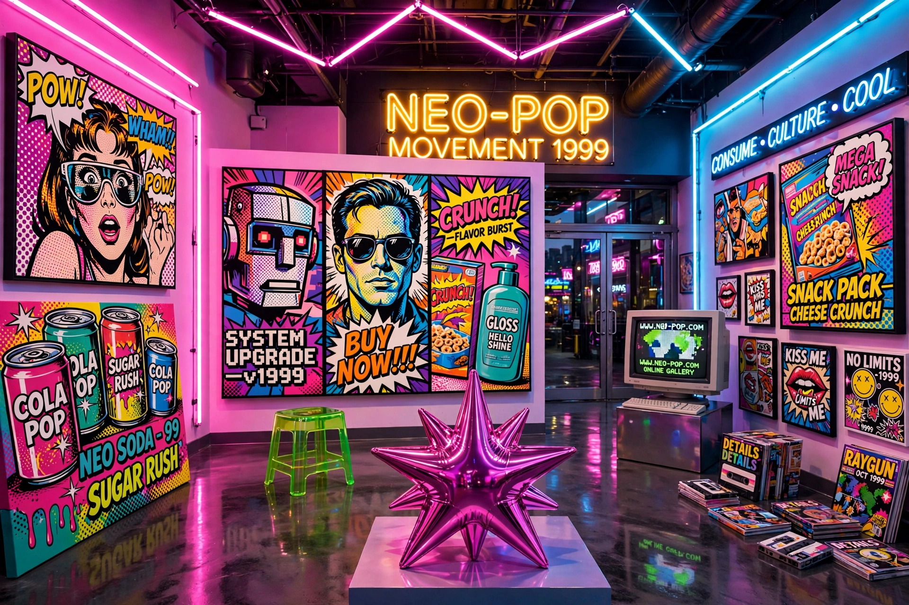

Neo-pop (or Post-Pop) is a postmodern art movement of the 1980s and 1990s. It is defined as a resurgence of the aesthetics and ideas of mid-20th-century Pop art, updated for an era of mass media, consumer culture and celebrity.
Unlike earlier Pop art, neo-pop often combined painting, sculpture and installation, borrowing from advertising, comics, toys and television. Artists embraced glossy surfaces, irony and appropriation, both celebrating and critiquing consumerism.
Leading figures include Jeff Koons, with his stainless-steel Balloon Dog and Rabbit, Keith Haring, Richard Prince, Cindy Sherman in related postmodern practice, and in Japan Takashi Murakami, whose Superflat movement extended neo-pop, and Yoshitomo Nara. In Britain, the Young British Artists shared some neo-pop concerns.
Neo-pop influenced contemporary art markets, fashion and design, and anticipated later debates about appropriation, branding and the artist as celebrity.